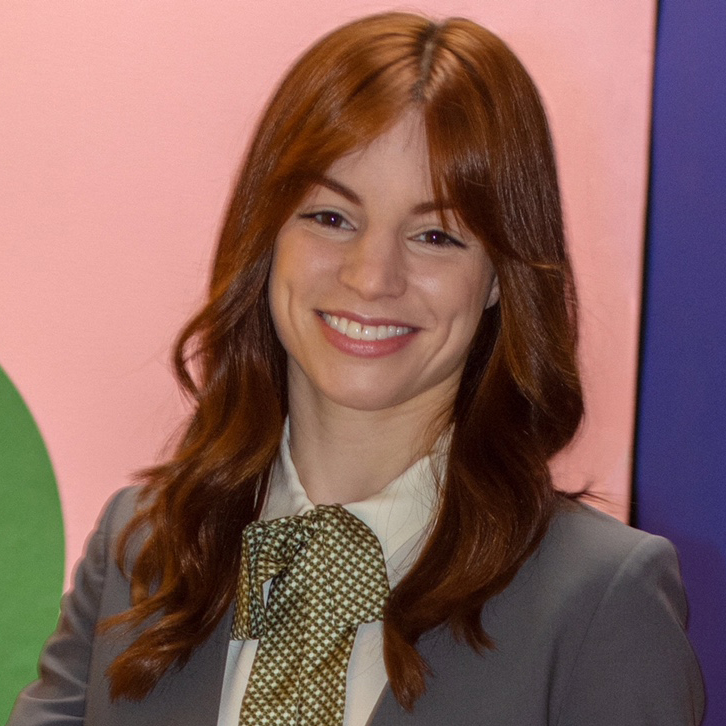
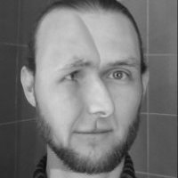
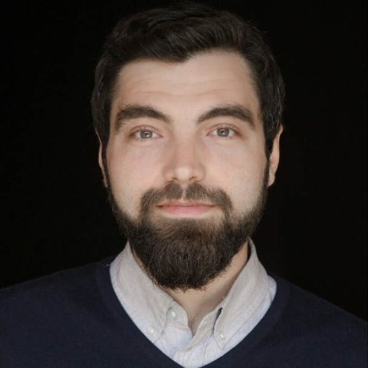

<div class="row">
<!--<h3>Invited Speakers</h3>-->
<table class="table">
  <tbody>
  <tr>
    <td></td>
    <td><b><a href="https://fabienbaradel.github.io/">Fabien Baradel</a></b> has just completed his PhD at INSA Lyon
      under direction of Christian Wolf and Julien Mille. During his PhD is has working on structured models for video
      analysis with a focus on task such as action recognition and counterfactual prediction. In Fall, he will be
      joining Naver Labs Europe as a research scientist for working on similar topics with a long term research interest
      to develop efficient and reliable models for video understanding in the wild.  </td>
  </tr>
  <tr>
    <td></td>
    <td><b><a href="http://www.culhamlab.com/jody-culham">Jody Culham</a></b> is a Professor in the Department of
      Psychology at Western University in London, Ontario. Her research focuses on how vision is used for perception
      and to guide actions in human observers. In order to answer these questions, she makes use of several techniques
      from cognitive neuroscience, including functional Magnetic Resonance Imaging (fMRI) and behavioral testing. </td>
  </tr>
  <tr>
    <td></td>
    <td><b><a href="https://as.nyu.edu/faculty/Moira-Dillon.html">Moira Dillon</a></b> is an Assistant Professor of
      Psychology at New York University and directs the Lab for the Developing Mind. Her work uses cognitive,
      developmental, and computational approaches to gain insight into the origin of abstract thought. A central thrust
      of her work concerns the development of human geometry, from the basic spatial sensitivities of infants, to the
      untutored use of spatial symbols and language by children, to the high-level spatial concepts of adults. Her work
      also explores how basic mechanisms of perception and cognition about objects, agents, and places might shape the
      products of human culture. Dillon is supported by an NSF CAREER Award, a Jacobs Foundation Early Career
      Fellowship, and DARPA. </td>
  </tr>
  <tr>
    <td></td>
    <td><b><a href="https://qwlouse.github.io/">Klaus Greff</a></b> is a Research Scientist at Google Brain in Berlin
      and a PhD student at IDSIA with J&uuml;rgen Schmidhuber. His research focuses on the binding problem in neural
      networks, on learning object representations, and in particular on unsupervised object perception. His work
      received an outstanding paper award from IEEE Transactions on Neural Networks and Learning Systems.</td>
  </tr>
  <tr>
    <td></td>
    <td><b><a href="https://tkipf.github.io/">Thomas Kipf</a></b> is a Research Scientist at Google Research in the
      Brain Team in Amsterdam. He has recently completed his PhD at University of Amsterdam under Prof. Max Welling
      on the topic "Deep Learning with Graph-Structured Representations". His research focuses on graph representation
      learning and relational structure discovery with applications to network analysis, modeling of physical systems,
      object-centric learning and reasoning, and model-based learning in agents. He has co-organized a series of graph
      representation learning workshops at ICML, ICLR, NeurIPS, KDD, and ELLIS. </td>
  </tr>
  <tr>
    <td></td>
    <td><b><a href="https://scholar.google.com/citations?user=Vzr1RukAAAAJ&hl=en">Igor Mordatch</a></b> is a Senior
      Research Scientist at Google Brain. He obtained his PhD in Computer Science from the University of Washington in
      2016 with Emo Todorov and Zoran Popovic, and subsequently did a postdoc with Pieter Abbeel at UC Berkeley. His
      research interests include model-based control, robotics, and multi-agent reinforcement learning. His work
      received best paper award at ICLR, and press coverage from Wired, MIT Technology Review, and others. </td>
  </tr>
  <tr>
    <td></td>
    <td><b><a href="https://vsitzmann.github.io/">Vincent Sitzmann</a></b> just finished his PhD at Stanford University
      with a thesis on "Self-Supervised Scene Representation Learning". His research interest lies in neural scene
      representations - the way neural networks learn to represent information on our world. His goal is to allow
      independent agents to reason about our world given visual observations, such as inferring a complete model of a
      scene with information on geometry, material, lighting etc. from only few observations, a task that is simple for
      humans, but currently impossible for AI. In July, Vincent will join Joshua Tenenbaum's group at MIT CSAIL for a
      Postdoc. </td>
  </tr>
  <tr>
    <td></td>
    <td><b><a href="https://psych.indiana.edu/directory/faculty/smith-linda.html">Linda Smith</a></b>, Distinguished
      Professor at Indiana University Bloomington, is an internationally recognized leader in cognitive science and
      cognitive development. Taking a complex systems perspective, she seeks to understand the interdependencies among
      perceptual, motor and cognitive developments during the first three years of post-natal life. Using wearable
      sensors, including head-mounted cameras, she studies how the young learner’s own behavior creates learning
      experiences.  The work has led to novel insights currently being extended through collaborations to robotics and
      artificial intelligence. She received her PhD from the University of Pennsylvania in 1977 and immediately joined
      the faculty at Indiana University.   She won the David E. Rumelhart Prize for theoretical contributions to
      cognitive science and is an elected member of both the National Academy of Sciences and the American Academy of
      Arts and Science. </td>
  </tr>
  </tbody>
</table>
</div>

<!--<div class="row">-->
<!--<h3>Panelists</h3>-->
<!--<table class="table">-->
<!--  <tbody>-->
<!--    <tr>-->
<!--      <td></td>-->
<!--      <td><b><a href="https://homes.cs.washington.edu/~yejin/">Yejin Choi</a></b> is an Associate Professor at the Paul G. Allen School of Computer Science & Engineering at the University of Washington and also a senior research manager at AI2 overseeing the project Mosaic. Her recent research focus on commonsense knowledge and reasoning, neural language generation, and language grounding with vision. She was a recepient of Borg Early Career Award (BECA) in 2018, among the IEEE’s AI Top 10 to Watch in 2015, a co-recipient of the Marr Prize at ICCV 2013, and a faculty advisor for the Sounding Board team that won the inaugural Alexa Prize Challenge in 2017.  </td>-->
<!--    </tr>-->
<!--    <tr>-->
<!--      <td></td>-->
<!--      <td><b><a href="http://alisongopnik.com/">Alison Gopnik</a></b> is a professor of psychology and affiliate professor of philosophy at the University of California at Berkeley.  She is a world leader in cognitive science, particularly the study of children’s learning and development. Alison is especially interested in how children learn about the causal structure of the world—how some things make other things happen. Her lab explores how children learn by observing statistical patterns, doing experiments and watching the experiments of others.</td>-->
<!--    </tr>-->
<!--    <tr>-->
<!--      <td></td>-->
<!--      <td><b><a href="http://web.mit.edu/cocosci/josh.html">Josh Tenenbaum</a></b> is a professor in the Department of Brain and Cognitive Sciences at MIT, a principal investigator in the Computer Science and Artificial Intelligence Lab (CSAIL), and a research leader in MIT’s Center for Brains, Minds, and Machines. Josh works at the intersection of computational cognitive science, developmental psychology, neuroscience, and artificial intelligence to investigate how the mind works.</td>-->
<!--    </tr>-->
<!--    <tr>-->
<!--      <td></td>-->
<!--      <td><b><a href="http://www.lscp.net/persons/dupoux/">Emmanuel Dupoux</a></b> is a full professor at the Ecole des Hautes Etudes en Sciences Sociales (EHESS), directs the Cognitive Machine Learning team at the Ecole Normale Supérieure (ENS) in Paris and INRIA (www.syntheticlearner.com) and is currently a part time scientist at Facebook AI Research. Emmanuel's research focuses on the mecanisms and representations specific to the human brain that allow the human baby to acquire one or several languages and become cognitively functional in his or her culture.</td>-->
<!--    </tr>-->
<!--  </tbody>-->
<!--</table>-->
<!--</div>-->